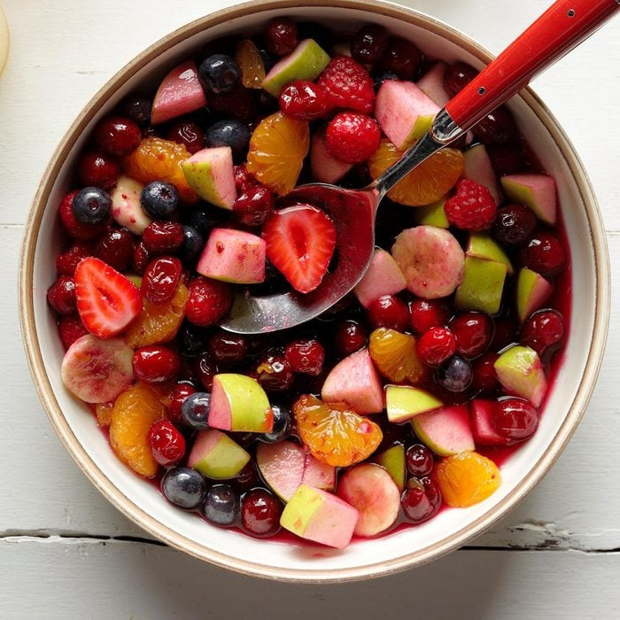

Festive Cranberry Fruit Salad

Ingredients
- 1 package (12 ounces) fresh or frozen cranberries
- 3/4 cup water
- 1/2 cup sugar
- 5 medium apples, diced
- 2 medium firm bananas, sliced
- 1-1/2 cups fresh or frozen blueberries, thawed
- 1 can (11 ounces) mandarin oranges, undrained
- 1 cup fresh or frozen raspberries, thawed
- 3/4 cup fresh strawberries, halved
Steps
- In a large saucepan, combine the cranberries, water and sugar.
Cook and stir over medium heat until berries pop, about 15 minutes. Remove from the heat; cool slightly.
- In a large bowl, combine the remaining ingredients. Add cranberry mixture; stir gently. Refrigerate until serving.
Home
Lemon Pie
Crispy Fried Chicken